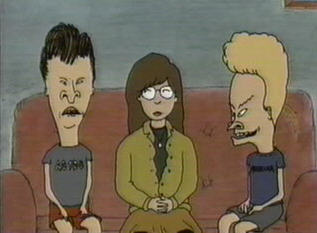

Daria first appeared as a character on MTV's Beavis and Butt-head. She was intended to act as a foil for the Little Weinerheads, a smart and acerbic female contrast to the idiotic doings of the two heavy-metal-influenced, hormonally-charged boys. (Glenn Eichler, who at the time was a story editor on B&B, created Daria, which is why B&B creator Mike Judge is not listed in the Daria credits.) When the show began winding its way towards its final season, MTV approached Eichler about spinning Daria off into her own series. Eichler agreed, brought fellow B&B staffer Susie Lewis on board as co-executive producer, and as the saying goes, the rest is history.
On B&B, Daria was a fellow schoolmate of the dopey duo and the only one who could stand to be around them, mostly because their stupidity amused her (and hanging around them probably freaked out Helen and Jake). She wasn't above taking advantage of their stupidity, either; for example, in the episode "Scientific Stuff," she had to work with them on a science experiment, but used them as the subject of the experiment. Beavis and Butt-head called her "Diarrhea" -- partly as a joke, partly because they couldn't remember her real name most of the time -- and every time they saw her, they let loose with their favorite chant: "Diarrhea, cha-cha-cha!" (It must've been the uranium in the drinking water...)
Interestingly, Daria was a bit more social on B&B than she is in Daria, even going so far as to be a reporter for the Highland High School paper (even though her parents had forced her into it, and in spite of the fact that she absolutely despised her assignment as -- ironically -- the fashion reporter). She was also drawn in the style of other B&B characters and wore different clothes than she does on Daria (as seen in the above image).
|
|
Daria's appearances in Beavis and Butt-head can be separated into two distinct categories: speaking and non-speaking. In the former, she has several lines, and in some episodes (such as "Scientific Stuff") she has a significant role. In the latter, she has no lines, but can be seen sitting in class, milling in the background of a crowd, etc.
Note that this listing is far from complete, as MTV no longer shows B&B on a regular basis, and the ones they do show include none of the early episodes (which were considered too "dangerous" to be broadcast again). However, this listing will continue to be updated as new information arrives.
Speaking Appearances
- Babes R Us
B&B try to get into a female mud-wrestling bar. Daria catches them practicing outside, wearing bikini tops and wielding baseball bats.
- Beavis and Butt-head Are Dead
When B&B don't come to school for three weeks, Principal McVicker's secretary calls the house and Beavis tells her that they've died. The news triggers celebrations and flashbacks, including one from Daria, who reminisces about several of her encounters with the Little Weinerheads. (This was the final B&B episode.)
- Butt Is It Art?
Mr. VanDriessen takes his class on a field trip to an art museum. In one scene, he comments that they'll be seeing "works by the master painters of the century." B&B start laughing, to which Daria replies, "He said master painters."
- Career Day
Highland High holds a career day, where the students can meet with people and learn about their occupations. Daria has to explain to B&B that the people don't work in career booths every day of their lives.
- Citizen Butt-head
When President Clinton visits the school, Principal McVicker bribes the boys to keep them away, but they find their way in anyway (and get an award for Students of the Year). Daria is one of the honor students chosen to question the President, only to be upstaged by the antics of B&B.
- The Great Cornholio
Beavis ingests too much sugar and caffeine at Stewart's house, causing him to turn into the Great Cornholio ("You will give me T.P. for my bunghole!"). Daria is one of the people he annoys; she tells him to get lost.
- Incognito
After being threatened at school, B&B decide to wear disguises to class and pretend they're foreigners. Daria makes sarcastic comments about an inept shootout that goes down between the guy who threatened B&B and someone in the parking lot.
- Scientific Stuff
B&B's science teacher assigns them to work on an experiment with Daria, who turns around and uses them as the subject of a report on human stupidity. This is the first (and perhaps only) episode in which Daria has a significant role.
(The theme of working with an idiot on a science project is revisited in the Daria episode "The Lab Brat" (#107), when Kevin is assigned as her lab partner. In a similar vein, the episode "Pinch Sitter" (#108) shows that she will still shamelessly exploit others -- in this case, the Gupty family -- for the sake of a good grade.)
- Spare Me
B&B attempt to change a flat tire on a car belonging to a couple of hot babes, hoping they'll "score." Daria ends up changing the tire, and the boys don't score (naturally). Her parting shot to B&B: "You guys are never going to get any."
- Sign Here
Mr. VanDriessen has the class take up a petition to keep a furrier out of town, and asks Daria to explain how they kill the animals. Her response? "Anal electrocution... 50,000 volts up the butt." True to form, she's rather pleased with herself when she says it. This episode was Daria's first speaking appearance.
- Sporting Goods
B&B must buy athletic supporters for gym class. Unfortunately, even the smallest supporter is too big for them, so they end up using racquetball patches instead. Daria, who was forced by her parents to join the school paper (and winds up as fashion editor just because she's a girl), ends up taking a revealing picture of them; the photo accompanies her article for the paper.
(This episode foreshadows the Daria episode "The New Kid" (#207), in which Helen and Jake convince [read: "bribe"] her into joining the school yearbook staff as a photographer.)
- Sprout
Mr. VanDriessen gives his students an assignment to grow their own food. B&B choose corn, hoping to make their own nachos, but their thumbs aren't exactly green. Daria offers them advice on how to plant and nurture the seeds. Surprisingly, they take her advice; unsurprisingly, their methods leave much (okay, everything) to be desired.
- U.S. History
B&B have to give oral (huh huh!) reports on a significant event in U.S. history for Mr. VanDriessen, with predictable results. Daria is in rare form as she blows holes in the explanation of the assassination of President John F. Kennedy.
- Walkathon
A local businessman sponsors a charity walkathon; B&B's attempt to participate goes pretty much how you'd expect. One of the other participants is Daria, who scams them into pledging an outrageous sum for her efforts.
(Again, this episode foreshadows a Daria episode. In this case, it's the episode "The Misery Chick" (#113), where she squeezed $10 out of Sandi for advice that was basically useless.)
- Water Safety
Mr. Buzzcut tries to teach the class how to swim. After Butt-head nearly drowns, he and Beavis get used as C.P.R. dummies. Daria is one of the students who adamantly refuses to do the job.
- Wet Behind the Rears
B&B refuse to take a shower after gym class, so Mr. Buzzcut and Principal McVicker decide a little public humiliation is in order. When B&B emerge from school wearing just their underwear, Daria shouts (off-camera), "Hey, look, it's Beavis and Butt-head!"
Non-Speaking Appearances
- Animation Sucks
- Beavis and Butt-head Do America
- Bride of Butt-head
- Bus Trip
- Candy Sale
- Cyber-Butt
- Evolution Sucks
- Generation in Crisis
- Head Lice
- It's a Miserable Life
- Just for Girls
- Manners Suck
- The Miracle That Is Beavis
- The Mystery of Morning Wood
- No Laughing
- Party
- P.T.A.
- Premature Evacuation
- Scared Straight
- Sexual Harassment
- Steamroller
- Substitute
- Tainted Meat
- Temporary Insanity
- The Trial
Interesting Facts
- In "No Laughing," Daria actually laughs along with the rest of the class when Mr. Buzzcut tries to make B&B break their "no laughing" rule so he can expell them.
- In "It's a Miserable Life," Butt-head is shown what the world would be like if he'd never existed. One of the scenes shows Daria arm-in-arm with a guy, singing Christmas carols; apparently, Butt-head had totally destroyed her image of boys (a facet of her character that, thankfully, Glenn Eichler and Susie Lewis dropped when they developed Daria, as evidenced by her crush on Trent and her eventual hooking up with Tom Sloane).
- In "Premature Evacuation" and Beavis and Butt-head Do America, we get to see Daria showing absolute shock (in the former, when the school receives a bomb threat; in the latter, when the NSA gunmen storm Mr. VanDriessen's classroom).
- Daria's voice changed noticably over the years, becoming less high-pitched and more monotone as Tracy Grandstaff continued to work with it. By the time the series finale ("Beavis and Butt-head Are Dead") aired, her voice was almost exactly the same as it was when Daria premiered with "Esteemsters" (#101). (In fact, that episode was produced at the same time as, or shortly after, the first season of Daria was produced, around 1996 or early 1997.)
|
|
Daria also appeared in Marvel's Beavis and Butt-head comic book series. The series ran for 28 issues, and Daria was in virtually every single one. Here is a list of her appearances, listed by issue number. (List compiled, and text written, by C.E. Forman.)
- (huh-huh, "number one") When B&B steal a bunch of yams from Mr. Anderson's car at the grocery store, Daria asks why they do things like that, and aren't they afraid of karma... and then has to explain to them what karma is.
- (mmmheh, "number two") Did not appear.
- Daria refuses to work with the Duo of Dorkdom in home economics class. Later, another student points out Beavis pulling out his weiner, and Daria says, "Ewww, gross!" At the end, she's among the students running away from B&B's exploding brownie mix.
- B&B are outside a tattoo parlor, looking in. Daria comes by and warns them if they get tattoos they'll have them forever. She watches them through the window for entertainment. In this issue's second story, she's seen in the background at a Chippendales bar the boys dance at.
- When B&B end up winning the big race at Highland High's Field Day, Daria expresses her disbelief.
- Daria's in the background at the Highland water park, wearing a two-piece black swimsuit (not the red one she wore in "Water Safety"). She's also in the background at the 4th of July fireworks display.
- B&B set up a lemonade stand outside a cute girl's house, and wear fake-nose glasses so she won't recognize them as the two idiots who came on to her before. A passing Daria remarks, "Interesting masks, guys. They make you two look ugly in an entirely different way from before." B&B proceed to ask her advice on getting the girl ("a real chick"). There's also a reference to Daria's photography interest when she tells the boys she refuses to take any Polaroids in the girls' locker room.
- The first of quite a few issues penned by Daria writers Sam Johnson and Chris Marcil. B&B destroy a tree in the park and are surrounded by angry environmentalists. A passing Daria remarks, "I abhor violence. I cannot witness this."
- This issue's fan-mail column is titled "Dear Diarrhea," and features Our Heroine answering letters from B&B fans with her typical sarcastic savvy.
- Halloween issue. B&B go to Daria's house (never shown on TV) for a Halloween party. The Misery Chick's got her face painted like a skull for the occasion (it looks hilarious). Daria knows Stewart, it's revealed (on TV they were never shown together). She tells a scary story, holding the flashlight up to her face in the dark, about Death coming after B&B.
- In the Thanksgiving Parade, B&B meet Daria dressed up as a pilgrim. They plan to "check out chick's thingies... but not Daria's... if she even has any."
- Christmas issue, Daria's in all three parts. First she explains mistletoe to B&B in class (there's a "Diarrhea cha cha cha" sign on the back of her chair). When they set some up so they can kiss girls, Daria's among the group moving as far away from them as possible. During the class gift exchange, Daria gets Butt-head's present ("A condom... how lovely."). Then B&B go to her house, "help" her string popcorn for the tree, and ask her the true meaning of Christmas. For once she's straight with them ("peace on earth, good will toward men"), but the boys think she's mocking them and leave, feeling insulted.
- Did not appear.
- Valentine's Day issue. Daria's on the cover's sidebar. In class she's in the background passing out cards with the rest of the class. In another story she participates in the school's Model U.N. conference as secretary-general, wearing a beret, red-and-white striped top (which shows off a hint of figure), and a blue scarf and skirt. Negotiations break down when B&B show up, and Daria tries unsuccessfully to restore order.
- In the fan-mail column, there's a B&B/Star Wars drawing, with Daria as Princess Leia.
- April Fools issue. Daria's the first to find the trick calculus question Mr. VanDriessen puts on his history test. A few weeks after April Fool's Day, B&B play an April Fool's "prank" on Daria by calling her "Diarrhea." Daria: "That's real original." In the second story, B&B go to a classmate's party, but she doesn't want them there and tells them it hasn't started yet. Daria meets them outside and explains that all the voices and music they hear mean the girl lied to them. Inside, Daria foreshadows her performance in the Daria episode "The Invitation" by standing around in the background, doing absolutely nothing (albeit sans Quinn to torment).
- B&B go to a backyard wedding, and I swear one of the men partially visible in the background looks a little like Jake! Daria's at Stewart's birthday party, looking like she's not having a good time. In another story, Mr. Buzzcut has Daria demonstrate that women have a different center of gravity than men by standing with her head against a wall, upper body parallel to the floor, and lifting a chair to her chest. ("Huh-huh, what chest?") There's also some fan-art featuring her.
- She's in the background in class, and is later seen silently reading one of the questions on the dirty vocab test B&B put together.
- Just in the background.
- Fan-mail column is "Dear Diarrhea, Number Two." Again Daria answers "what I loosely refer to as their fan-mail."
- B&B talk about writing on their weiners. Beavis asks Daria if she's interested in some "reading material," to which Daria shoots back that she'd prefer "something a little longer."
- On the first page, Daria's in the background buying an amusement park ticket. Later she's seen walking around the park with a "stuck up" sign on her back, and later still she "compliments" the boys on the animal-mascot costumes they've stolen to sneak into the park. In the second story, there's a scene where Butt-head asks Daria why she's not as pretty as other girls, which really gets her mad. The letter column has her in some fan-art, including one where she's making out with Beavis on the couch.
- The class takes a field trip to Amish country, and Daria's in the background on the bus and in much of the issue. She takes notes and expresses a mild interest in candle-making. When two Amish boys with stupid laughs get on the bus in place of B&B, Stewart tries to warn Mr. VanDriessen, but Daria covers his mouth from behind, warning, "Speak, Stevenson, and you die."
- Second Christmas issue. She's on the cover of this one, saying "Very funny, guys," as Beavis pulls the old severed-hand-in-a-box trick, only with Butt-head's head.
- Did not appear.
- Just in the background on the bus.
- Easter issue. The class shows off the eggs they've painted for the orphans. Daria: "You can't even paint Easter eggs without talking about your butts, can you?" When they're boarding the bus to the orphanage, I swear Daria's looking at a voluptuous classmate with more than a hint of hurt and jealousy. (That's what it looks like anyway.) At the orphanage, Beavis steals the Easter Bunny costume, eats all the chocolate rabbits and turns into Cornholio. Daria tricks him into crawling inside an animal hutch, which she then locks shut, explaining to the kids, "It's not really a hutch. It's more like a jail for bad bunnies."
- Last issue. In class a sign on Daria's chair reads "carear verjun." Mr. VanDriessen's class puts together a time capsule. Daria suggests, "We should leave a candy bar and a heavy metal poster... to reflect the shallowness of our hollow, consumer-driven society." When B&B are talking about chicks of the future, Daria comments, "Don't tell me you morons wanted to leave your phone numbers in the time capsule." Later the boys decide that's a good idea and try to dig the capsule up. In the letter column, one fan suggests B&B ask Daria a really tasteless question. Stewart's about to do it, but Daria tells him to shut up.
Miscellaneous stuff I noticed:
- Daria's outfit is slightly different in the comics. Her jacket is a lighter brown, and she usually wears navy-blue leggings.
- Rick Parker always seems to draw her with her mouth hanging open if she's talking. It looks kind of odd.
- B&B are a bit meaner to Daria in the comics. They're more insulting than on the show, where they just never comprehended anything she said. Fortunately nothing really ever happened to her either on the show or the comics (unlike, say, Stewart or Anderson or VanDriessen).
|